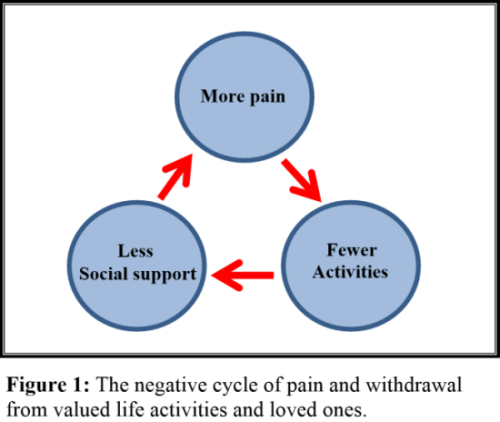

Module: Pain management
Afton L. Hassett, Psy.D. University of Michigan Medical School, Department of Anesthesiology
Pain is common in people with scleroderma. Approximately 40 to 80% of those with scleroderma have pain. The good news is that there are many things you can do to decrease the pain and lead a more productive and engaging life.
Listen to the testimonial on pain management strategies used by a person with scleroderma.
About your pain
Pain often causes people to slow down, stop doing important or fun activities, and withdraw from family and friends. This results in your world “shrinking.” You start to limit your valued life activities and contact with people you enjoy. This is probably the worst thing you can do if you want to improve your pain.
The bottom line is that pain tends to improve with activity. Pain and your ability to function also improve when you are happier. Happier people are those who spend time with people who they care about and do the things they love.
Activity is the key!
It is important to keep moving. Most pain experienced by people with scleroderma is completely benign. In other words, the pain is not the signal for a problem you should be worried about, but rather the pain is the problem itself. You are going to want to tackle the problem head on. Don’t let pain keep you on the sideline.
You should check with your doctor before you begin any new physical activity programs.
Where do you begin?
We suggest that you build a pain self-management program around 6 themes, based on the ExPRESS domains described below. You may want to focus on one or two of these at a time, but at least consider how each domain might pertain to you. Here they are:
ExPRESS Domains:
- Exercise
- Psychological Distress
- Regaining Function
- Emotional Well-Being
- Sleep
- Stress Management